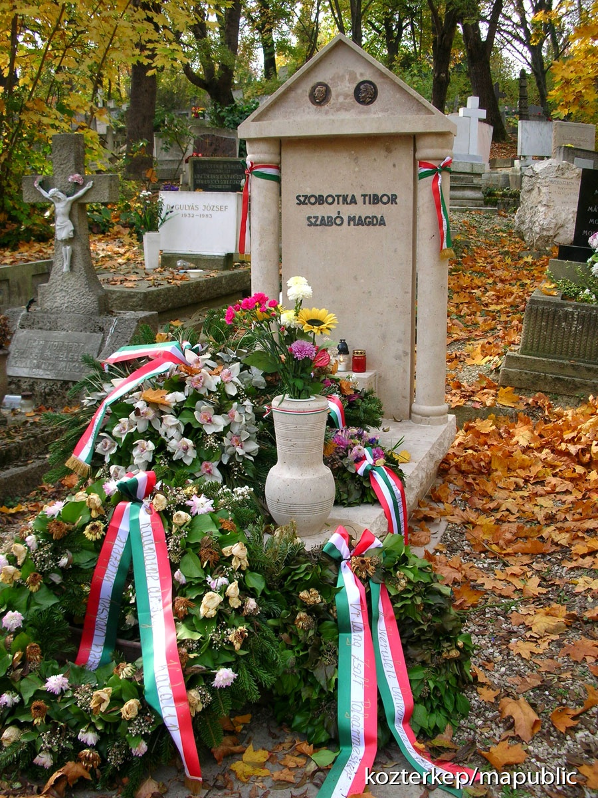
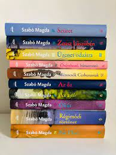

Szülővárosában, a mostani Debreceni Református Kollégium Dóczy Gimnáziumába (akkor Dóczi Leánynevelő Intézet) tanult, itt érettségizett 1935-ben, mások mellett Szondy György is tanította; 1940-ben a Debreceni Egyetemen kapott latin–magyar szakos tanári és bölcsészdoktori diplomát (értekezésének címe: A római szépségápolás). A helyi Református Leányiskolában, majd Hódmezővásárhelyen tanított 1945-ig, amikor a Vallás- és Közoktatásügyi Minisztérium munkatársa lett. Az 1940-es években rövid ideig Páhi (Bács-Kiskun vármegye) községben is tanított. 1949-ben megkapta a Baumgarten-díjat, de még azon a napon visszavonták tőle, és állásából is elbocsátották; egészen 1958-ig nem publikálhatott. Ebben az időben a Horváth Mihály téri Gyakorló Általános Iskola (a mai Budapesti Fazekas Mihály Gyakorló Általános Iskola és Gimnázium egyik elődintézménye) tanáraként dolgozott. Ismert tanítványai közé tartozott Egri János műsorvezető és Kovács P. József televíziós bemondó.
Az eredetileg költőként induló Szabó Magda 1958 után már regény- és drámaíróként tért vissza. A Freskó és Az őz című regények hozták meg számára az országos ismertséget. Ettől fogva szabadfoglalkozású íróként élt. Számos önéletrajzi ihletésű regényt írt, az Ókút, a Régimódi történet és a Für Elise saját és szülei gyermekkorát, valamint a 20. század elejének Debrecenjét mutatja be. Sok írása foglalkozik női sorsokkal és kapcsolataikkal, például A Danaida vagy a Pilátus.
1985 és 1990 között a Tiszántúli református egyházkerület főgondnoka és zsinati világi alelnöke volt. 1992-ben a Széchenyi Irodalmi és Művészeti Akadémia alapító tagja és az irodalmi osztály rendes tagja lett.
1947-ben kötött házasságot Szobotka Tibor íróval, akinek alakját Megmaradt Szobotkának című könyvében idézte fel. A férj halála után Szabó Magda lett hagyatékának gondozója.
Az egyik legtöbbet fordított magyar íróként regényei számos országban és nyelven megjelentek. Alapító tagja a Digitális Irodalmi Akadémiának. 1987-es regénye, Az ajtó először 1995-ben jelent meg angolul Stefan Draughon fordításában, 2015-ben pedig Len Rix fordításában. Regénye felkerült a The New York Times 10-es listájára.
Kilencvenedik születésnapján rengetegen ünnepelték.
2007. november 19-én, 90 éves korában, kerepesi otthonában, olvasás közben érte a halál.

Szülővárosában könyvesboltot neveztek el róla. Szentmártonkátán a könyvtár viseli a nevét. A Szabó Magda Magyar–Angol Kéttannyelvű Általános Iskola 2009-ben vette fel a nevét. A dunaújvárosi Szabó Magda Református Általános Iskola 2018 szeptembere óta működik ezen a néven.
2021-ben közterületet neveztek el róla Budapest II. kerületében.
Kerepesen emlékművet állítottak neki utolsó otthona közelében, házának kerítésén emléktábla mutatja, hol élt Szabó Magda. Kerepes város könyvtára és művelődési háza 2020-ban vette fel a Szabó Magda Művelődési Ház és Könyvtár nevet. Az intézmény 2021-től, az írónő születésnapját ünnepelve kulturális rendezvénysorozattal, a Szabó Magda Művészeti Napokkal emlékezik meg a nagy írónőről, kopjafájánál pedig halálának évfordulójakor koszorúznak.
2017. október 5-én a Google a 100. születésnapját ünnepelte egy lokális magyar Google doodle-lel.
Keresztfia és jogutóda, Tasi Géza 2023-ban díjat alapított emlékére, Szabó Magda-díj néven, amelyet ezentúl minden évben egy író és egy társművészeti ágban alkotó személy kaphatja, akik sokat tettek Szabó Magda életművének életben tartásáért.
